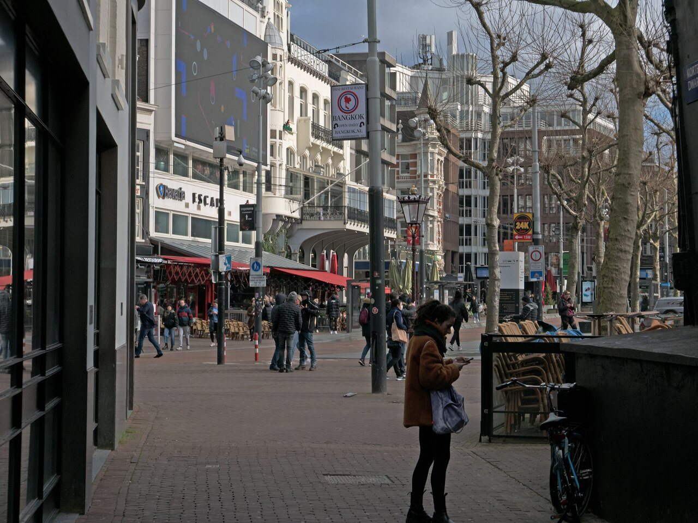

Travel · Practical tools
The traveler’s phone kit: four apps for the essentials
Read the article →Photo by IM3847 · CC BY-SA 4.0
Met field notes · travel & connection
Useful ideas for traveling well, meeting people with care, and making new places feel a little more familiar. These articles live here—not on the Met homepage.
Explore Asia destination guides
Travel · Practical tools
Photo by IM3847 · CC BY-SA 4.0

Dating · Intentional introductions
Image from Met

Solo travel · Low-pressure starts

New city · Find a rhythm

Conversation · Keep in touch
Photo by Hans Vivek · CC0 1.0
Met helps you remember the places and people you encounter, and connect when you both choose to reveal.